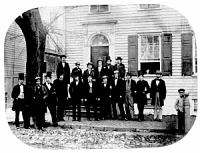
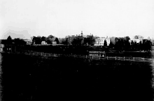
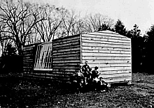
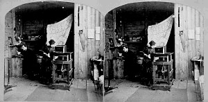
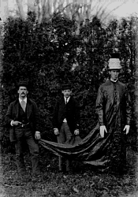
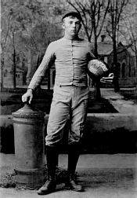
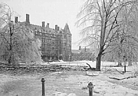

19th Century Photographers at Princeton

George K. Warren, a photographer who traveled from Massachusetts seven times to photograph Princeton classes in the 1860s and 1870s, took this photograph of Osler's Eating Club in 1861. Warren was one of many photographers chosen by Princeton students to photograph members of the class and their activities.

Photographers selected by Princeton students in the nineteenth century to photograph the class came from many different parts of the East Coast. John Moran, a Philadelphia photographer, traveled up to Princeton in 1868. He photographed members of the class, and took a number of "views", including this one. This photograph of Princeton's campus taken from the southwest illustrates Moran's place in the American Landscape school of photography of the 1860s and 1870s. It depicts the Princeton landscape during a period of industrialization and transformation after the Civil War. The view of Moran's lens frames the entire breadth of Princeton's small campus—extending only from Nassau Hall, and Whig and Clio Halls, back to the playing fields—while the railroad tracks represent the larger, more accessible, world beyond the college.

Photographers who came to Princeton in the nineteenth century often brought with them portable shanties that they erected on campus for the duration of their stay. William R. Howell, a photographer who came to Princeton several times in the late 1860s and early 1870s, set up this studio to take photographs for the Class of 1870, in front of which ten students are seated.

This stereoscopic photograph shows the interior of Howell's shanty, mentioned above. Howell may be seated in the back, while a young assistant stands by one of his cameras waiting for the next sitter.

Besides sitting for formal portraits, students also posed for photographs that document a wide variety of their activities. This photograph, taken by the Canadian photographer William Notman, depicts students dressed for the Sophomore Commencement celebrations circa 1874.

A photograph of a Princeton student from the 1885 championship football team taken by the Pach Brothers photographic studio. The student holds on to a replica of the cannon on Cannon Green and stands in front of a painted backdrop depicting Chancellor Green library.

Royal H. Rose, a photographer well-known to Princeton students and residents, began taking photographs in the early 1870s. He took this photograph in the early 1900s after a severe ice storm wreaked havoc on a number of trees and deposited a sheet of ice over the whole campus.
 Go to the next section of photographs.
Go to the next section of photographs.
Return to the Mudd Library home page.